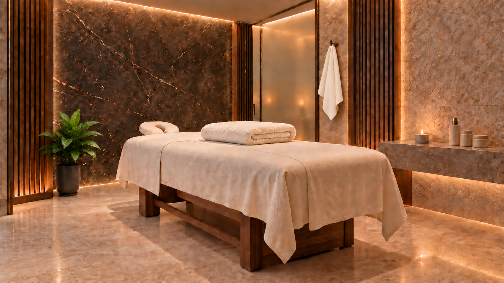
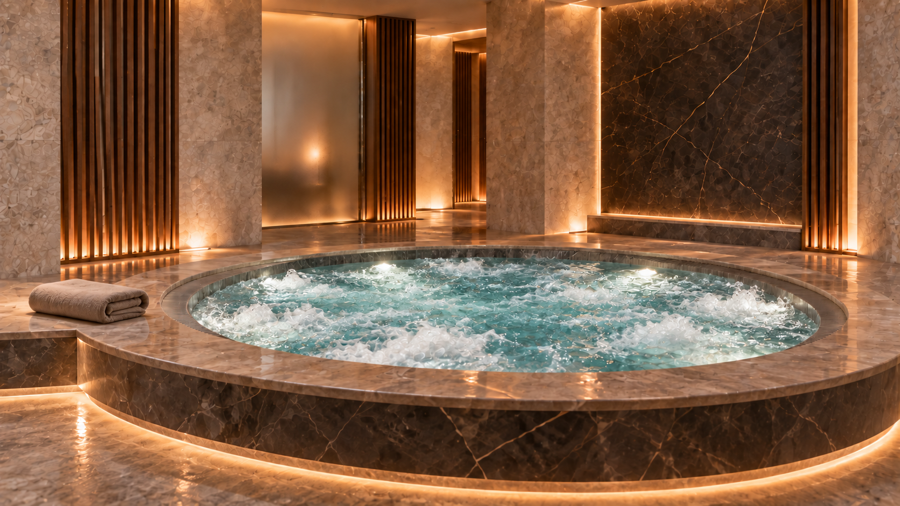
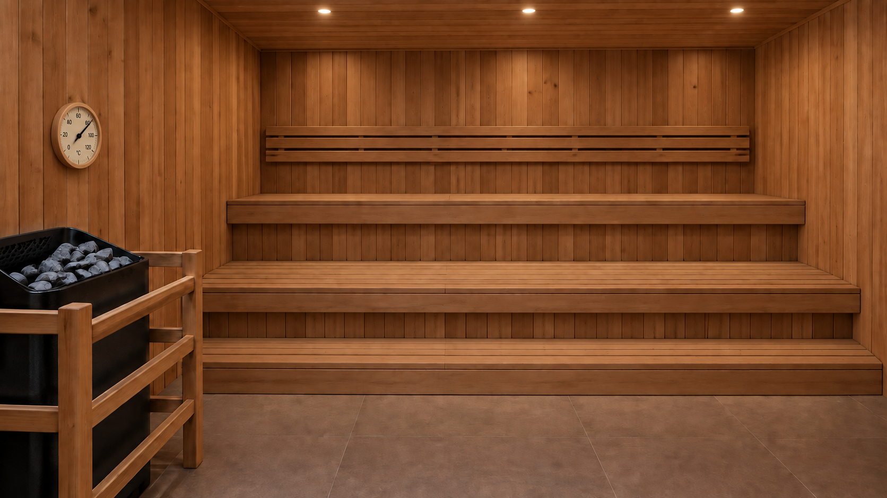

AI-assisted hospitality campaign · Portfolio concept
A warm, premium campaign built around restorative comfort, considered details and one simple promise: feel renewed.

The brief
The goal was to present a complete premium spa experience — pool, hydrotherapy, jacuzzi, massage, sauna, relaxation and tea — while keeping the campaign calm, inclusive and visually coherent.
The creative direction avoids medical promises, wellness clichés and staged models. Instead, architecture, warm light, water and carefully chosen details carry the story.
Final film · 00:28



My contribution
Beyond this concept
This case demonstrates the creative standard. A client project can extend into a complete, repeatable content workflow — built around the brand, the available materials and the channels where the campaign will appear.
Editing and art direction using original venue photography and video for a credible, brand-specific result.
Campaign concept, promotional film, voiceover, captions, social copy and platform-ready variations.
Natural adaptation for English, German, Latvian and Russian — with additional languages available when needed.
Structured briefs, review stages, content tracking and reusable automation for ongoing production.
Campaign system
This self-initiated concept uses AI-assisted visuals. For client work, original venue photography and footage can be used to create an authentic campaign that accurately represents the business.